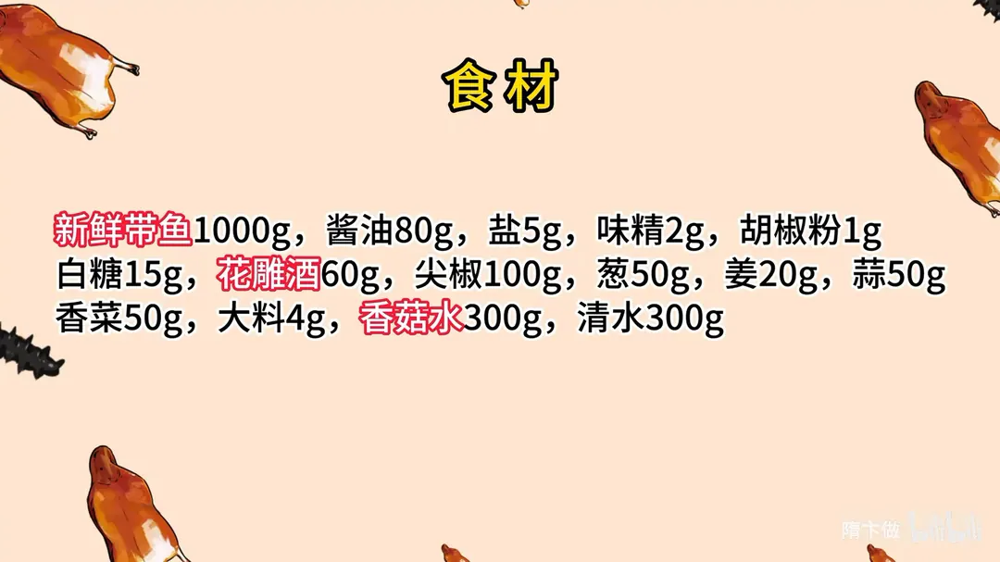
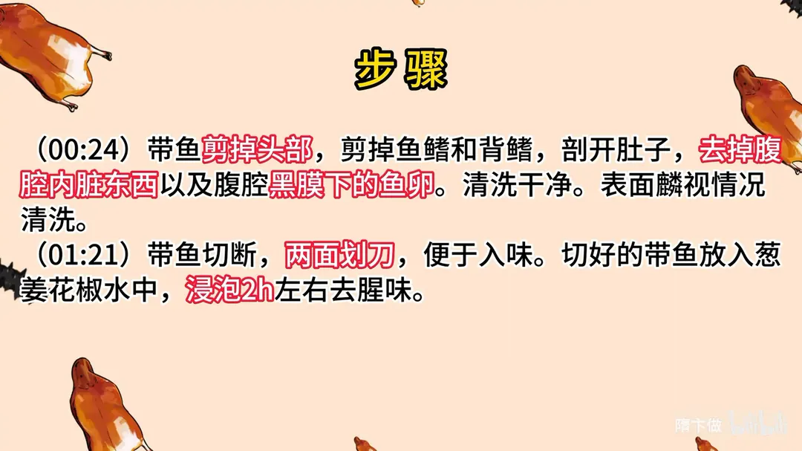
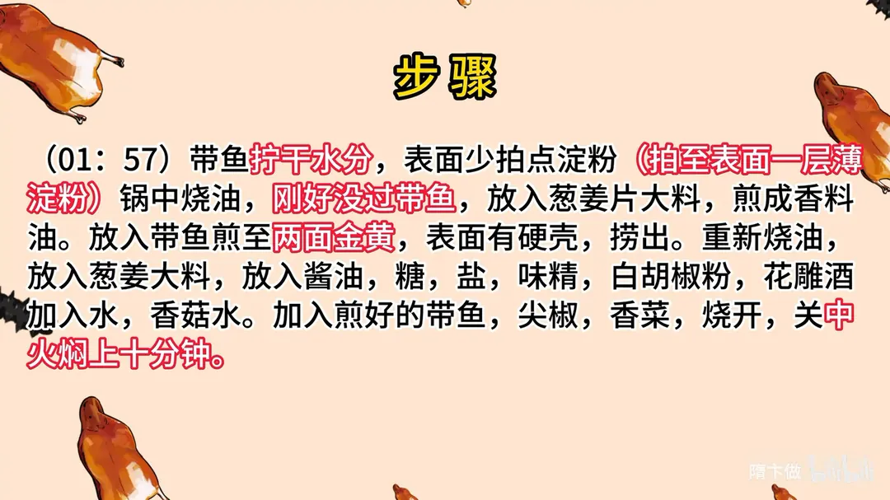
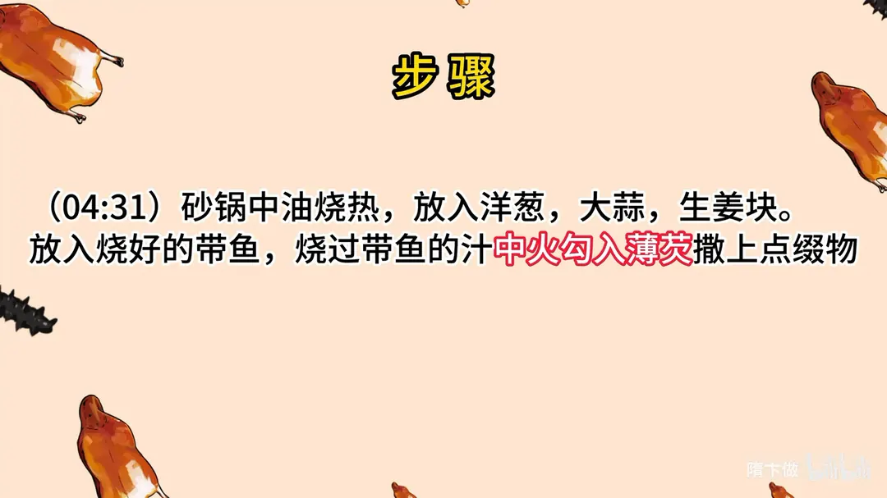

红烧带鱼
隋卞一做。带鱼 1000g 剪头去鳍、两面划刀，泡葱姜花椒水 2 小时去腥。锅中油刚好没过带鱼，先用葱姜大料煎成香料油，再把带鱼煎至两面金黄硬壳，加酱油 80g、花雕酒 60g 与香菇水清水同烧，中火焖 10 分钟，最后砂锅收汁勾薄芡。
原视频：https://www.bilibili.com/video/BV1iN4y1r7Vj
食材
新鲜带鱼、酱油 等 15 样
| 类别 | 用料 | 用量 |
|---|---|---|
| 主料 | 新鲜带鱼 | 1000g |
| 调料 | 酱油 | 80g |
| 调料 | 盐 | 5g |
| 调料 | 味精 | 2g |
| 调料 | 胡椒粉 | 1g |
| 调料 | 白糖 | 15g |
| 调料 | 花雕酒 | 60g |
| 配料 | 尖椒 | 100g |
| 配料 | 葱 | 50g |
| 配料 | 姜 | 20g |
| 配料 | 蒜 | 50g |
| 配料 | 香菜 | 50g |
| 香料 | 大料 | 4g |
| 汤水 | 香菇水 | 300g |
| 汤水 | 清水 | 300g |
步骤
- 处理带鱼：带鱼剪掉头部，剪掉鱼鳍和背鳍，剖开肚子，去掉腹腔内脏东西以及腹腔黑膜下的鱼卵，清洗干净；表面鳞视情况清洗。
- 切段划刀：带鱼切断，两面划刀，便于入味。
- 葱姜花椒水浸泡：切好的带鱼放入葱姜花椒水中，浸泡 2 小时左右去腥味。
- 拍粉：带鱼拧干水分，表面少拍点淀粉，拍至表面一层薄淀粉。
- 煎鱼：锅中烧油，油刚好没过带鱼；放入葱姜片、大料煎成香料油，再放入带鱼煎至两面金黄、表面有硬壳，捞出。
- 调汁烧鱼：重新烧油，放入葱姜、大料，下酱油、糖、盐、味精、白胡椒粉、花雕酒，加水与香菇水；放入煎好的带鱼、尖椒、香菜，烧开关中火焖上十分钟。
- 砂锅收汁：砂锅中油烧热，放入洋葱、大蒜、生姜块，放入烧好的带鱼，烧带鱼的汁中火勾入薄芡，撒上点缀物。
讲解要点
难度：★★★☆☆（带鱼易腥易碎，难在腌够时间、煎出硬壳、焖的火候）
为什么这么做
- 剪掉背鳍、尾巴尖，去掉喉牙和腹内黑膜：背鳍没有肉，下锅先糊还带腥；黑膜和残留内脏是腥味的主要来源，必须刮到干净。
- 泡葱姜花椒水 1-2 小时：带鱼的腥不是拍层粉就能盖住的，要靠长时间浸泡把腥味拔出来，顺便让肉紧实一点。
- 两面划刀：厚肉处划开，腌和烧的时候味道才进得去，也能防止煎的时候鱼身卷缩。
- 表面只拍薄薄一层淀粉：淀粉在鱼皮下形成一层保护，煎时不易粘锅破皮，烧的时候还能挂住汤汁。
- 油里先下葱姜大料做香料油：炸带鱼的油特别腥、用完没法再利用，先用香料把油「顺」一遍，鱼沾上香味，腥味也压住了。
- 大火下鱼，让鱼皮迅速凝壳：油温高表面立刻结壳，不破皮不粘锅，这就是「红烧必炸」的道理；油要刚好没过带鱼，温度才稳。
- 烧的时候加尖椒、香菜：借一点青辣和香菜的清香，把腥气压下去，味道也更复合。
容易翻车
- 带鱼不够新鲜时，那层银膜最好刮掉，不然腥味明显。
- 淀粉拍厚了，下锅一炸就成了厚壳，烧完糊嘴。
- 油温不够就下鱼，鱼皮一破，整条鱼就散了。
- 焖的时间超过 10 分钟，肉就烂得夹不起来。
- 砂锅底料（洋葱、蒜、姜）没垫好，鱼直接贴底容易糊。
热评补充
- 怕粘锅可以改裹薄薄一层面粉，后期汤汁也会更稠、更浓。
- 带鱼的经验也能平移到龙利鱼、巴沙鱼这类无刺鱼上。
原片尾卡




原片文案
AI 字幕校准稿
红烧带鱼。从开始饭店一直有人说要做这道菜，今天让你们看看我的版本怎么做。先教教怎么处理带鱼。
带鱼头是不要的，把头去掉；把背后这个鳍剪掉，这个背鳍其实没啥用，一炸还糊；尾巴尖也不要了。去腹腔的东西，把那些脏的东西清干净就行了。这是带鱼籽，可以隔着膜把它洗到干干净净的。
这样就处理干净了，然后咱们再剁块。带鱼切段，中间的划上几刀，两面都划一下，便于入味。把切好的鱼块直接放到葱姜花椒水里边，你要是不着急吃，腌着它一两个小时都没问题。
下一步我们开始烧带鱼。把泡着的带鱼捞出来，手轻轻攥一下，去掉多余的水分。表面少拍点淀粉，看到表面有一层白乎乎的就可以了。
锅里边放入油。这个炸带鱼特别费油，特别的腥，炸完那个油就没法再利用了。教你们个窍门：油里边搁点大料，放点葱姜，还会出一点香味，再把带鱼放进去。这会得开大火，让那个带鱼皮迅速地凝结成壳。红烧必炸，一定得炸。先到这种颜色就可以了，表面一摸有个硬壳。
然后重新放入油，放入葱姜、大蒜、大料，加入酱油、水，咱们加入香菇水，加入少量的花雕酒，白糖、味精、盐、白胡椒粉。把带鱼放进去，这里边放俩尖椒，放两根香菜，增加一个复合味，盖上盖中火焖上十分钟。
砂锅烧热，再放上底油，炸洋葱、大蒜，生姜搁在里边，然后把烧好的带鱼捡到里边，搁两个香菇点缀一下。然后把锅里的汤勾个薄芡，浇上面，都黏糊的。来点香油，浇到带鱼上面。
这个的调味很好，然后带鱼也软烂，带鱼把里面的味道也都吸进去了。